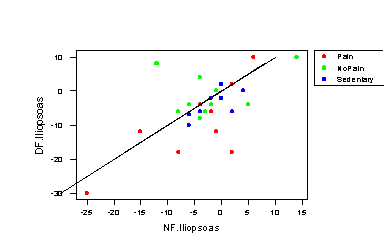
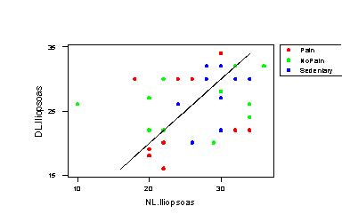
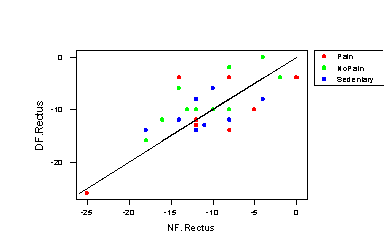
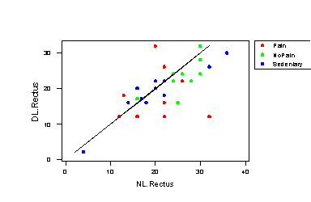
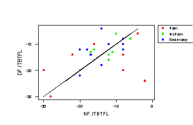
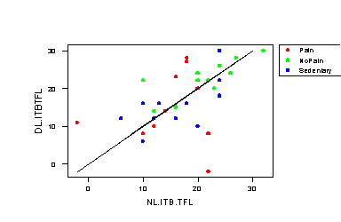
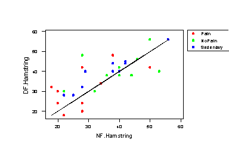
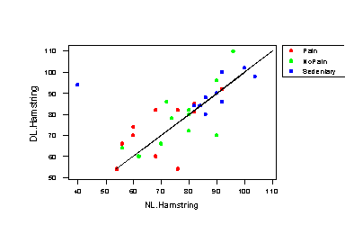

| / Home |
Keywords: repeated measures, one-way anova
The dynamic and repetitive nature of running means that runners are particularly prone to over-use injuries such as lower back pain. Chronic pain is often caused by muscle imbalances, which result in faulty alignment of and abnormal stresses applied to the spinal column. Muscle imbalances originate as adapations in motor control due to pain or external stimuli, and are then reinforced and preserved by repetition.
This study, conducted by Physiotherapy student Andrew Mooney, examined the flexibility of four major muscle groups associated with movement of the hip, with particular attention to imbalances between the left and right sides or between the dominant and non-dominant sides.
A total of 33 male subjects were included in the study. The subjects were divided into three groups: 11 runners with low back pain, 11 runners without low back pain and 11 sedentary individuals without low back pain. (Runners were recruited from the Ashgrove and Toowong athletics clubs, non runners from the University of Queensland and the general community. Runners with lower back pain were recruited first. Once this subject group was tested, subjects for the two control groups were recruited to match the runners with low back pain according to age, height and weight.)
The muscle groups examined were
For each muscle group, two measures of flexibility were used. The first, relative flexibility, was related to the range of movement of the joint before postural compensations occurred, and the second was a measure of the maximal functional length of the muscle. Relative flexibility and functional length were measured for each muscle group on both the left and right sides of the body.
| Variable | Description | ||
| Subject | Subject number, 1 - 33 | ||
| Group | Pain, NoPain or Sedentary | ||
| Match | 1 - 11, indicating matched triples | ||
| Age | Age of subject in years | ||
| Height | Height of subject in cm | ||
| Weight | Weight of subject in kg | ||
| Distance | Type of running event: Sprint, middle distance (Mid) or long distance (Long) | ||
| Years | Number of years running | ||
| Dominant | Dominant side, Left or Right | ||
| DF.Iliopsoas | Relative flexibility of iliopsoas muscle on dominant side in degrees. Positive numbers indicate above the horizontal, negative numbers below the horizontal. | ||
| DF.Rectus | Relative flexibility of rectus femoris muscle on dominant side in degrees | ||
| DF.ITBTFL | Relative flexibility of ITB/TFL muscle on dominant side in degrees | ||
| DF.Hamstring | Relative flexibility of hamstring muscles on dominant side in degrees | ||
| DL.Iliopsoas | Functional length of iliopsoas muscle on dominant side | ||
| DL.Rectus | Functional length of rectus femoris muscle on dominant side | ||
| DL.ITBTFL | Functional length of ITB/TFL muscle on dominant side | ||
| DL.Hamstring | Functional length of hamstring muscles on dominant side | ||
| NF.Iliopsoas | Relative flexibility of iliopsoas muscle on nondominant side in degrees | ||
| NF.Rectus | Relative flexibility of rectus femoris muscle on nondominant side in degrees | ||
| NF.ITBTFL | Relative flexibility of ITB/TFL muscle on nondominant side in degrees | ||
| NF.Hamstring | Relative flexibility of hamstring muscles on nondominant side in degrees | ||
| NL.Iliopsoas | Functional length of iliopsoas muscle on nondominant side | ||
| NL.Rectus | Functional length of rectus femoris muscle on nondominant side | ||
| NL.ITBTFL | Functional length of ITB/TFL muscle on nondominant side | ||
| NL.Hamstring | Functional length of hamstring muscles on nondominant side | ||
Data file (tab-delimited text)
Mooney, A. (1997). A study in the flexibility of the hip muscles in runners with low back pain. Honours Thesis, Department of Physiotherapy, University of Queensland.
The measurements are very variable, but the plots below show that the back pain group tends to have shorter and less flexible muscles than the other two groups.
The dominant = nondominant lines are shown on the plots. The dominant hamstring seems to be more flexible than the nondominant, although surprisingly this is mainly so for the sedentary group.
|  |  |
|  |  |
|  |  |
|  |  |
Both the average hamstring flexibility, and the difference between the dominant and nondominant hamstring flexibility, increase with the weight of the subject.
|
Home - About Us -
Contact Us Copyright © Gordon Smyth |